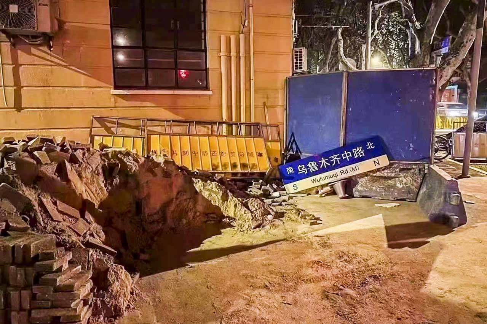
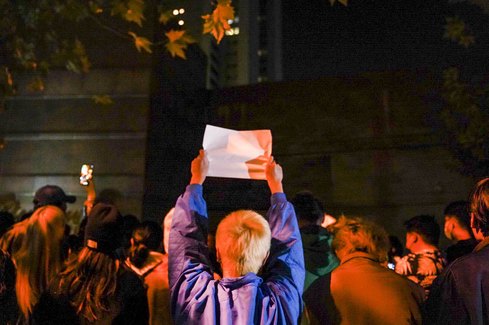
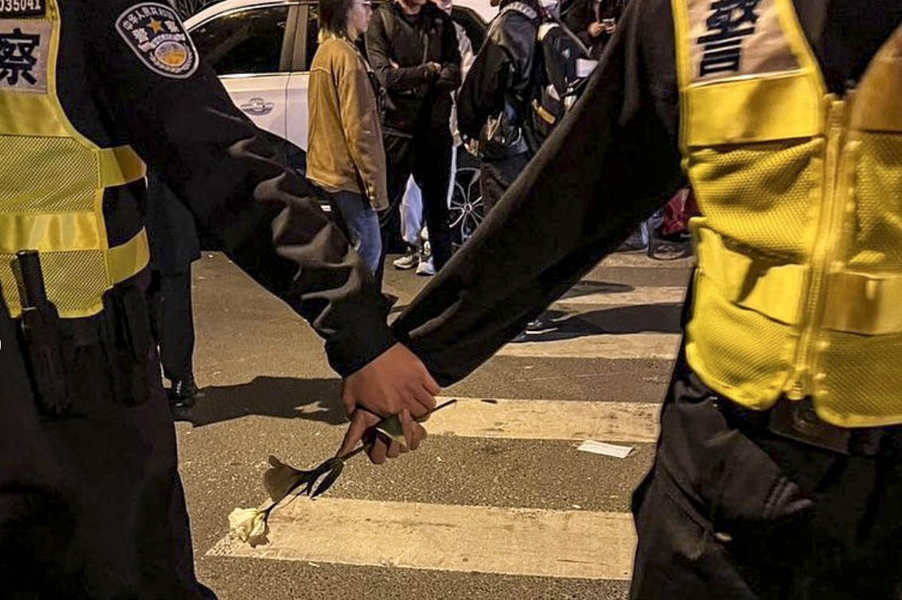
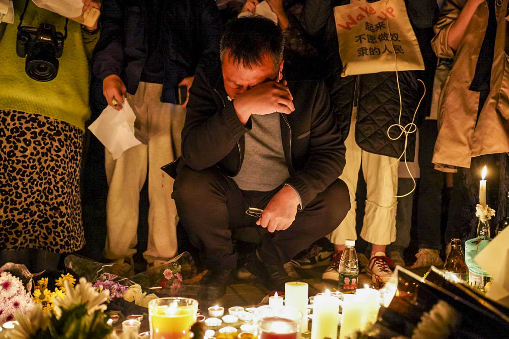
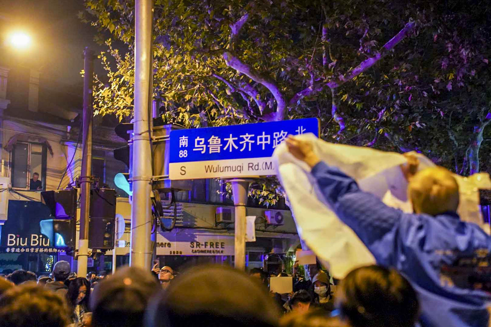
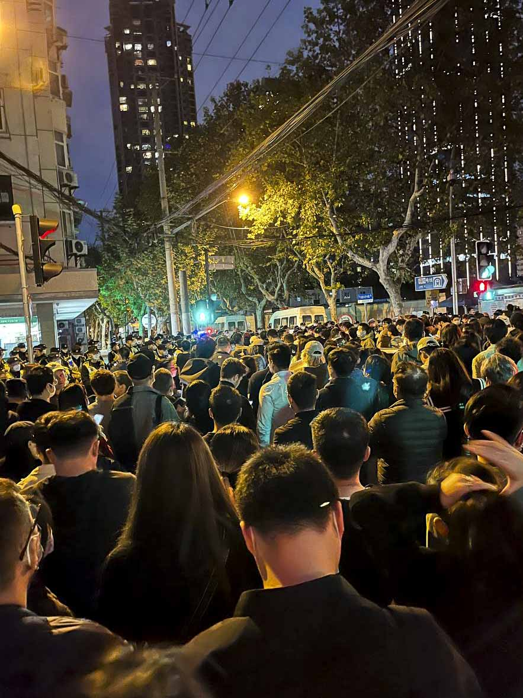
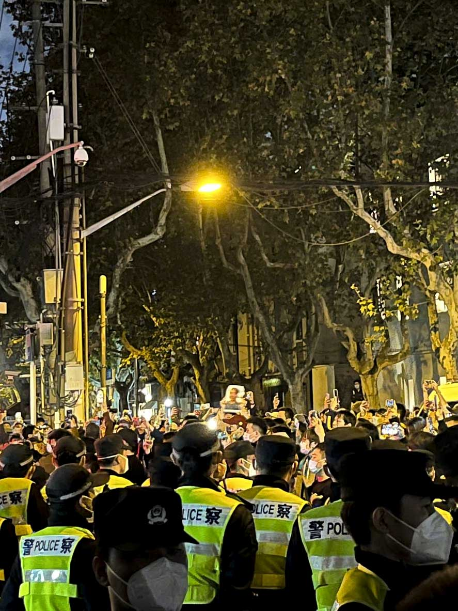
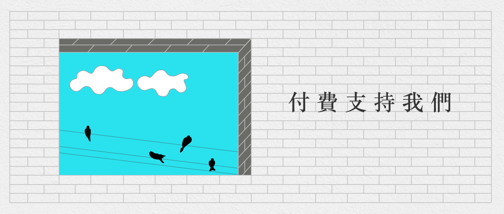

【現場】烏魯木齊中路一夜一日，燎原的火花被點燃
Table of Contents
他從烏魯木齊火災到官方發布會，再到市民抗議疫情封鎖講了一遍。警察聽完說了一句「我操。」

Figure 1: 2022年11月27日，曾聚集大量悼念市民的上海烏魯木齊中路，路牌被拆掉放在地上。網上圖片
端傳媒中國組
刊登於 2022-11-28
【編 者按】11月24日，烏魯木齊大火；25日，新疆人走出家門抗議；26日晚，在上海的烏魯木齊中路，民眾自發前來悼念，現場有人帶領高喊口號、抗議封控， 警民發生衝突，多位民眾被帶走；27日，烏魯木齊中路有民眾聚集，要求警察放人，被警方清場。現場圖片顯示，「烏魯木齊中路」的路標已被拆除。端傳媒採訪 了這一夜一日，走在烏魯木齊中路上的普通人。
從悼念到警戒：香薰蠟燭，新疆棉，擁抱
11月26日晚上9點多，住在上海的星星在一個微信群裏看到，在烏魯木齊中路有悼念烏魯木齊火災死難者的活動，她住得近，就從家裏過去。剛去到的時 候，現場只有十幾個人，路上放着一個箱子的鮮花，有人從箱子裏拿出白色的花，放在路邊，和一整排的蠟燭擺在一起。星星看見很多人擺的是香薰蠟燭，她推測大 家都是臨時起意過來的，沒有特別的準備。
烏魯木齊中路和安福路、長樂路交接，這裏有很多咖啡館和酒吧，是上海最多年輕人聚集的地方。星星說，今年上海封城到最後，也有很多年輕人在安福路上 喝酒、唱歌狂歡。26日晚上，她所見到的都是大約20歲到30歲的人，男生女生都很時髦，穿着得很漂亮，「很上海的年輕人，非常朝氣蓬勃，非常好看，非常 漂亮，但同時他們又非常憤怒，非常悲傷」。她聽到有人在外放一首歌曲，她聽不懂，用手機聽歌識曲的功能識別，是俄羅斯維吾爾族歌手木拉提·納斯洛夫的一首 歌。

Figure 2: 2022年11月26日深夜，上海烏魯木齊中路聚集大量市民，悼念11.24烏魯木齊火災10位逝者。
大約11點的時候，一輛警車開過來，星星看到三個警察來到現場。警察試圖疏散人群，「我知道大家在悼念，但是悼念放心裏就好了。」現場的人回嗆他 們：「我們不想放心裏。」這時，來到烏魯木齊中路的人越來越多，人群圍着蠟燭和鮮花，很少有人講話，現場十分肅穆。有一個男生接連拿出三張紙，分別寫着維 吾爾語、漢語、阿拉伯數字的「10」，這是官方通報烏魯木齊火災的死亡人數。星星注意到，鮮花和蠟燭旁邊，還放着一些棉花。她理解這是「新疆棉」的意思， 以示支持被封控了100多天的新疆人。
有人用手機airdrop（隔空投送）了一張照片，上面寫着六句話：「不慶祝 不感恩 不原諒 不配合 不沉默 不忘記。」隨着現場人越來越多，警察也來得越來越多，她估計有40多個警察，把悼念的人圍成一圈。星星中途出去透了一口氣，想再擠進擺蠟燭的地方，警察已 經不讓她進去了。
大約11點21分，現場一個男生開始唸詩，「此刻我坐在這裏，感到絕望……」還沒念完幾句，警察就準備動手拉他走，場面有了第一次混亂，很多人大聲 說「他沒有做錯」。一個女生對警察激動地喊道：「你放開他，我要聽他念完。你們在怕什麼？」男生被警察帶到一邊問話，他對警察說，自己喝醉酒，只是在散 步，看見有人在這裏就過來了，隨後被朋友拉走了。
11點47分，一個警察再次嘗試驅趕人群，說他們擾亂公共秩序、擾民。現場的人回敬他，「我們全程都很安靜，最吵的人是你。」這時一個挺着大肚子的 孕婦過來，問警察，「你好，我想問這旁邊有一個施工隊很擾民，我養胎很辛苦，請問怎麼解決？」她說完之後，在場的人都開始鼓掌，星星說，這位孕婦的幾句話 說得鏗鏘有力，顯然是在為在場的人轉移警察的注意力，警察也只好開始解答她關於施工隊的疑問。

Figure 3: 2022年11月27日凌晨，警察圍堵上海烏魯木齊中路聚集的大量市民，其中兩名警察共同手執一支白花。
星星覺得現場的人都十分友善跟剋制，有人跟警察說，我們是一邊的，不應該是對立面。警察回答，這是領導的命令。人群又說，誰還沒幾個傻逼領導。
11月27日0點多，星星看見有兩個女生在舉白紙，之後現場開始傳閱白紙。這時星星發現烏魯木齊中路兩邊開始有些騷動，她才注意到，警察拉起了兩道警戒線，把後面趕來的人攔住了，他們進不到悼念現場。
星星看見剛剛拿出三張「10」字紙的男生開始有所行動，他先是對着警察說，「你可以給我一個擁抱嗎？」警察沒有理會他。他又問警戒線外面的人，「你 們誰可以給我一個擁抱嗎？」這時很多人隔着警戒線和他擁抱。他又轉過頭問警察，「為什麼他們不能過來擁抱我？」警察回答，「你可以出去擁抱他們。」他又 問，「為什麼他們不能過來擁抱我？」
有人繼續和警察理論，終於警察把警戒線往下放了一些，但外面的人有些猶豫，裏面的人開始鼓勵外面的人進來。終於警戒線外的人開始進來擁抱裏面的人， 有一些人抱在一起哭。星星注意到當晚一直有人哭泣，有人在和警察理論的時候，就突然啜泣。她也和一個陌生的女生擁抱了。星星一直在靠近安福路的路段，她後 來聽朋友說，長樂路那邊的人，也「衝塔」（指發起行動）沖掉了警戒線。
後來警戒線又被拉起來，但被人群「衝」掉了，星星看見有一個女生踩在警戒線上，大聲說着「罷核酸，罷核酸，罷核酸。」接着有人開始喊「不要核酸要自 由」，聲音有些微弱，回應的人也不多。有一個人勸說不要喊這句口號，以免讓警察知道他們知道四通橋事件。還有人用嘴咬斷了警戒線，但後來警戒線又拉了起 來。
「配合三年了啊，還要我們配合多久？」一個女生嚎叫着回應要求人群「配合」的警察。還有一個男生提到了上海被封城兩個月的經歷，星星覺得，這個夜晚的悼念和抗議跟上海封城造成的傷痛有很大關係。大約1點鐘，星星看來了兩輛大巴車的特警，事態也逐漸有些升級，她也先走了。

Figure 4: 2022年11月26日深夜，上海烏魯木齊中路聚集大量市民，悼念11.24烏魯木齊火災10位逝者。
剋制的人群：便衣，口號和街坊的花
蘭是大約0點去的烏魯木齊中路，他在附近的一個酒吧，收到朋友的信息，說這邊有悼念活動。他到現場的時候，警察正在拉起警戒線封路，他藉口住在裏頭，才被放了進去。後來他也看到有人跟警察理論後進入現場了。
他覺得最初警察的神態還算放鬆。蘭在擺放蠟燭的地方，聽到身後兩名警察在小聲交談，討論現場的狀況是怎麼回事，就回頭問他們，是否了解大家為什麼而悼念，兩個警察說不知道。蘭從烏魯木齊火災到官方發布會，再到市民抗議疫情封鎖講了一遍。警察聽完說了一句「我操。」
「只要是個正常人，是能夠有正常的反應的。」蘭說，信息封鎖和管制，讓真實的信息無法傳遞出去，導致更多人之間沒有辦法達成共識。「問題是很多人沒有看到的。最關鍵就是沒有看到。」
將近凌晨1點的時候，聚集的人越來越多，人們開始從烏魯木齊中路和安福路交界的路口向北移動。蘭覺得人群的行動有了一些遊行的味道。在長樂路路口， 蘭聽到人們跟攔路的警察理論，有人說：「你們不要攔我們，你們憑什麼攔我們？」還有現場的年輕人質問警察說：「你也是別人的父親，你良心過得去嗎？」「你 們不是為人民服務。」
0點多，美麗也去到現場。他被攔在警戒線外，同時在外面的還有一個女生，看著像維吾爾族人，她說自己是新疆人。女生高聲質問警察：「我的同胞遇難 了，你憑什麼不讓我進去。」警察沒有搭話，她又說：「你能幫我把花拿進去嗎，你能幫我默哀嗎？」警察說：「別開玩笑了。」這時人群幾乎被點燃了。女生喊： 「你覺得同胞去世我們是去悼念是開玩笑嗎？」這時人群拉開警戒線衝了過去。
還有一個女生穿過警戒線，對著三面的人群說，我不用說什麼你也能懂我的意思吧。然後她張嘴說話，沒有發出聲音。人群激烈鼓掌。美麗聽見人們唱了三次 的Do You Hear the People Sing。他聽到有人喊關於「習近平」的口號，他有些害怕，但看了路邊警察的反應，他們十分漠然。
他還看見幾個男生不斷在路中間演《茶館》最後一幕，扮演王掌櫃喊「大清完蛋啦」，並用白色紙巾當成紙錢從天上撒下。1點多是人最多的時候，整條烏魯 木齊中路幾乎被充滿，美麗看見不斷有警察增援到現場。他看見遠離人群的地方，三三兩兩站著很多便衣警察，戴著藍牙耳機，盯著人群。第二天看直播，他還看見 前一晚看見的便衣，「熬了一夜第二天繼續幹。」
美麗覺得現場的氣氛有些鬆弛。烏魯木齊中路的悼念區一直有女生舉著白紙，不斷點燃被風吹滅的蠟燭，十分肅穆，而兩邊的人則時時有人用調侃的方式和警察斡旋。一個白人滑滑板路過，喊了一聲「新疆牛逼」，人群裡一個男生也高喊「不要被外國人帶節奏。」
同樣在現場的大雄也說，1點鐘大概是當晚人最多的時候，他估計現場應該有200多人。警察中也出現了一些穿着便衣的人，領導模樣，聽着穿警服的警察 彙報。一些警察開始拍現場人群的大頭像。他說，烏魯木齊中路有兩個小區，儘管拉了警戒線，陸續也有街坊穿過警戒線回家，還有一些街坊站在門口探頭望着。一 個中年大叔聽完大雄和朋友講了事情的來由之後，走出去買了一束花過來。
在警戒線範圍內的，還有一個酒吧，在大聲播放世界盃直播，和肅穆的悼念現場相映照。悼念的人群不時去酒吧借用洗手間，後來警察要求酒吧把烏魯木齊中路上的門關掉，只留另一邊的一個門。

Figure 5: 2022年11月26日深夜，上海烏魯木齊中路聚集大量市民，悼念11.24烏魯木齊火災10位逝者。
大雄是差不多2點離開的，他在現場聽到了許多口號，通常都是跟警察爭執的時候，人群會喊口號。最整齊的是「不要核酸要自由」，還有人零零星星地喊 「警察回家」，「習近平傻逼」，還有人喊「瓦解父權制」。2019年香港反修例運動發生、6月初佔領金鐘時，大雄也在香港。他覺得上海的抗議和香港的社會 運動有共同之處，都是很「中產」的社會運動，人群都保持了十分的剋制、和平跟「講道理」，甚至都同樣會撿起地上的垃圾，維持街道乾淨。
他覺得和香港最像的地方是，大家都很憤怒。「很多人一開始就是帶着憤怒過來的，經過這麼多年的壓抑，大家都有各種各樣的情緒。」他說，但不一樣的 是，他在香港但時候感覺香港的運動很成熟，有的人搬水，有的人搬路障，分工井井有條，而在上海當晚夜「大家聚在一起之後，不知道該幹嘛，很多人為了上廁所 不得不離開現場，出去以後就進不來了」。
大雄感覺，前半夜警察沒有接到清場的指示，也都還很剋制。
Nay住在烏魯木齊中路附近，他在現場待到了11月27日凌晨2點多，他離開的時候，陸續看着有人牽着狗走過來。這是一種心照不宣，在Nay看來，大家都以自己的方式去參與和聲援。「都知道去那個區域是為了什麼。但更勇敢的人，他們喊出了大多數人沒有喊出的口號。」
Nay在的時候，現場的人唱了幾輪國歌，直到他2點多走的時候，人群和警察都沒有肢體上的衝突。回到家以後，他繼續在Instagram看現場的直播，2點半之後，人們開始喊口號，口號越來越激烈，包括「習近平，下台」，「共產黨，下台」。
他說：「就如執政者常說的，星星之火可以燎原。因為大家都有共同的感受，需要的只是一點火花。」

Figure 6: 2022年11月27日，上海有民眾再次聚集在烏魯木齊中路不同路段。
第二天：被驅散的人、歡聲笑語的西餐廳
崔崔在11月27日凌晨3點多醒來，看到朋友圈的消息，決定去烏魯木齊中路。在現場，接近4點的時候，路上的人已經不多，仍然有在喊「不要核酸要自由」的口號，警察開始強力驅散現場悼念人群，他在靠近安福路的路口被警察推搡離開。
崔崔記下了一段視頻，視頻中，路上只剩下零零散散的民衆，身穿藍色反光衣的警察數量明顯更多，警察張開雙臂推搡人，並一邊吼道：「別看了，快走，往 前走，不走就上車！」。有一個女生和警察發生肢體衝撞，她甩開警察的手，尖銳地喊叫：「你幹嘛，別推我！」警察威脅：「要不要上車？」一個男生質問：「為 什麼要上車啊？」警察說：「為什麼你上車就知道了，走不走？」突然幾個警察衝過去抓住一個男生，把他拖到路的另一邊，又放開了他。崔崔見到有人被分散開之 後，被警察扣在那邊，人群過不去，他們也沒有再出來。
崔崔還遠遠看見靠近長樂路口那邊有人落單，被警察包圍着，聽見了一聲很長的尖叫。接近5點，他被驅趕離開了現場，他不是最後一波被驅趕走的人。
11月27日下午5點，崔崔又去了烏魯木齊中路附近，烏魯木齊中路已經被封鎖，無法進去，但華山路、長樂路、鎮寧路都有密密麻麻的人，他估計現場有幾千人。有許多人在喊口號，「不自由毋寧死」，「放人」-–—下午3點多，一個拿花的男生在現場被警察推上了警車。
崔崔說，27日下午的策略是一波接一波地驅散人群，趕到一個路口，就會散開一波人。他看見制服警察和便衣警察抓了好幾個人。「他們要強行驅散人群 了，就不停往前推，一般人不喜歡暴力驅趕，像趕狗一樣被推，被擠，就肯定會發生一些衝突，稍微多說幾句，幾個警察就衝過來把你擰住。」他看到被帶走的人， 都沒有喊口號，只是在推搡的過程中動作慢了的人。崔崔用視頻記下了現場，人群密集，他覺得驅散過程幾乎要發生踩踏事件。
崔崔帶着80多張白紙去到現場，藏在衣服裏，他想發給路邊的人，但基本沒人接，只好沿途把它們塞在共享單車的籃子裏。他在上海已經生活了十幾年，從未想過上海會出現這樣的「社會運動」。他覺得跟今年的封城有很大的關係，「發生了那麼多離譜的事情」。
小一在下午5點多的時候去到現場，沿途看見非常多人和警察在對峙。一個喇叭公放警告，說人群嚴重影響公共交通秩序，抓緊時間疏散，否則會採取必要措 施。她聽到有人一陣一陣地唱國歌，一個穿橘黃色襯衣的爺叔從她旁邊走過去的時候說，當年鬧的比現在厲害多了，一場空。她看到一些人舉白紙，其中還有一個人 舉着一張毛澤東相，下面寫着為人民服務。

Figure 7: 2022年11月27日，上海有民衆再次聚集在烏魯木齊中路不同路段。
接近6點，小一親歷了警察的驅趕，她意識到警察是很有部署的，他們手挽手結成兩層嚴密的人牆，把人群圍起來，同時把人往外趕。小一說，當時的人非常多，她很怕有踩踏事故發生。她看見一個男生激動地喊「下台」，被警察制服了帶走，但不知道他最終有沒有被捕。
她感到詭異的是，在洶涌的現場，商店還在照常營業。在已經被警察掃除得空空蕩蕩的十字路口，她看見一家西餐廳玻璃窗後面，還有歡聲笑語在聚餐的人 們，有很多年輕人。她也決定和結伴而去的粒安去吃羊肉火鍋。但吃到7點多的時候，店員催促她們吃快點，因為警察要求商家八點閉店封場。
粒安帶着白菊花，一個警察問她花怎麼回事，她說是家人忌日，「有家人忌日不買花嗎？」她們被往外推的時候，只有一個穿紅衣服的奶奶逆着人群行走，說「我要回家的呀。」她還有朋友的台灣朋友被抓走，因為帶着彩虹旗。
小孟也在27日下午4點去了烏魯木齊中路附近，確認了幾個路口都被封鎖之後，她走到了常熟路地鐵站。她聽見有人唱Do You Hear the People Sing，但沒有聽到《國際歌》。警察在現場和人發生肢體接觸的時候，現場就會有人喊「警察打人」。她聽到一個大約30來歲的男人在人群中點評：「找不到 工作就來幹這事，他們知道真相是什麼嗎？一會來個CNN記者全報道了。」還有一個年紀大點的爺叔點評：「這些獨裁都要完蛋，伊朗要完蛋，俄羅斯要完蛋，都 要完蛋。今年是劃時代的一年，民衆在覺醒。我希望你們年輕人是有希望的一代。」
小孟看見來了10多輛巴士的警察，黑壓壓的一片人。她朋友告訴她，自己看見了4輛半滿的大巴，拉着抓走的民衆，透過車窗看見警察在訓話。
應受訪者要求，均為化名

2017年7月，端傳媒啟動了對深度內容付費的會員機制。但本文因關乎重大公共利益，我們特別設置全文免費閱讀，歡迎你轉發、參與討論，也期待你付費支持我們，瀏覽更多深度內容。
本刊載內容版權為端傳媒或相關單位所有，未經端傳媒編輯部授權，請勿轉載或複製，否則即為侵權。